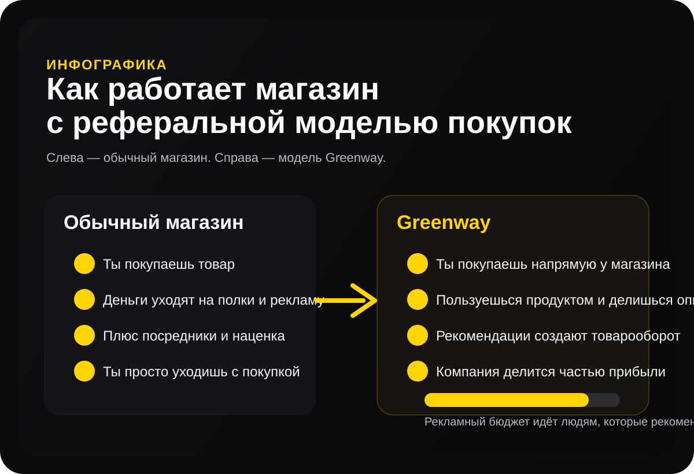
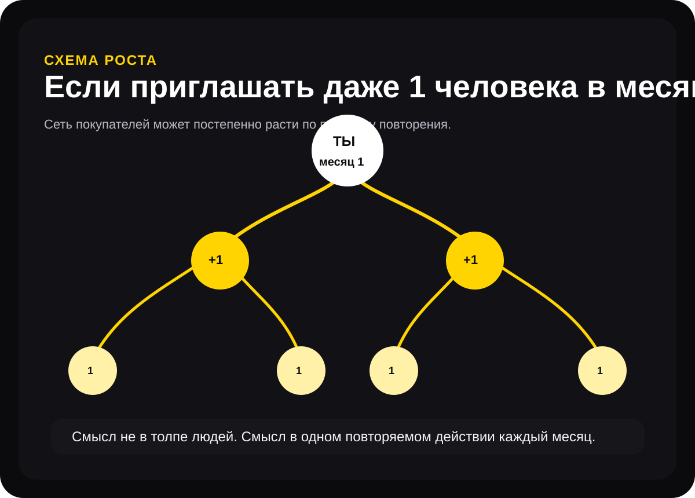
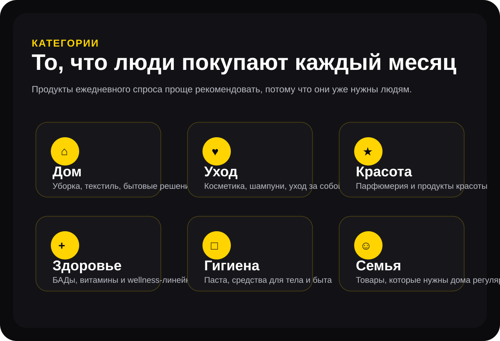

Обычный магазин
- Покупка есть, а связи с оборотом нет.
- Большая часть бюджета уходит в офлайн-маркетинг.
- Ты просто остаёшься покупателем.
Магазин с реферальной моделью покупок
Greenway — это не просто магазин, а понятная система: покупки, рекомендации, сеть покупателей и модель, в которой можно расти постепенно, даже если начинать с одного человека в месяц.
Не нужно искать толпу людей. Даже если приглашать одного человека в месяц и помогать ему повторять это действие, сеть покупателей может постепенно расти.
Обычная ситуация
Шампуни, зубная паста, средства для дома, уход, косметика, БАДы — это повседневный спрос, который повторяется снова и снова. В обычной рознице ты просто платишь и уходишь. В реферальной модели ты можешь оставаться внутри системы и получать бонусы за созданный товарооборот.
Понять за 30 секунд
Именно поэтому на сайте появляются визуальные блоки: человек должен не только читать, но и сразу видеть логику движения денег, товаров и рекомендаций.
Покупаешь напрямую через интернет-магазин
Пользуешься продуктом и делишься опытом
Рекомендации формируют товарооборот
Компания начисляет бонусы за оборот

Выбери свою ситуацию
Кому-то важно совмещать с работой, кому-то — зарабатывать из дома, кому-то — монетизировать клиентскую базу или экспертность. Выбери вариант, который ближе к тебе.
В 2024 году у нашего новорождённого сына начался тяжёлый атопический дерматит. Мы искали решение, убрали агрессивную бытовую химию из дома и перешли на эко-продукцию Greenway. Через месяц кожа очистилась — и с тех пор эта история стала для нас личной точкой входа в тему экологичных продуктов.
Сначала Greenway был для нас просто интернет-магазином для семьи. Со временем стало ясно: это не только продукты, а целая экосистема и понятная бизнес-модель. Готовая система без складов, закупок и аренды подходит для совмещения с работой, учёбой, декретом или своим делом.
Сейчас мы с супругой строим семейное направление: развиваем сеть клиентов и покупателей, живя в небольшом городе. Я делюсь рабочими инструментами, опытом и поддержкой, чтобы людям было проще разобраться и сделать первые шаги.
Реферальная модель
Ниже — визуальный взгляд на две модели. В обычной рознице бюджет уходит в рекламу и посредников. В Greenway значимая часть внимания и бюджета смещается в сторону людей, которые рекомендуют магазин.
Компания уже создала продукты, сайт, приложение, склады, региональные центры, логистику и материалы. Ты работаешь через личный кабинет.
Формат подходит для коротких рабочих промежутков: 20–60 минут в день, по дороге, в перерыв или вечером.
Работа строится через мессенджеры, соцсети и онлайн-встречи. География не ограничивает.
1 человек в месяц
Смысл простой: ты приглашaешь хотя бы одного человека в месяц, показываешь ему магазин и помогаешь сделать то же самое. Так постепенно растёт сеть покупателей и товарооборот.
Ты показываешь магазин одному человеку. Потом помогаешь ему повторить этот же шаг. Когда действие повторяется из месяца в месяц, сеть покупателей начинает расти по уровням.

Мини-калькулятор
Калькулятор показывает принцип роста: каждый новый человек может повторить действие и пригласить ещё одного. Это не обещание результата, а понятная демонстрация логики сети.
Результат зависит от действий, обучения, активности и товарооборота.
Почему это понятно обычным людям
Главный навык — пользоваться, разбираться, делиться опытом и помогать человеку пройти такой же путь.
О компании
Компания выбрала реферальную модель вместо дорогой рекламы и лишних посредников: продукты покупают напрямую, а часть бюджета направляется людям, которые рекомендуют магазин и создают товарооборот.

Greenway — это не история про редкий товар, который человеку нужен один раз. Это продукция для дома, здоровья, красоты, ухода, семьи и личной гигиены. Такие категории люди покупают регулярно, поэтому здесь проще объяснить ценность через личный опыт.
Миссия
Идея Greenway — помогать людям постепенно убирать из дома агрессивную химию, выбирать более экологичные решения и при этом получать возможность строить доход на рекомендациях того, чем они пользуются сами.
Следующий шаг
Приходи на разбор. Я покажу, как устроена модель, с чего начать без опыта и какие действия помогают выйти на первые результаты.
Сайт носит информационный характер. Результат зависит от личных действий, обучения, активности команды и товарооборота.